서부권
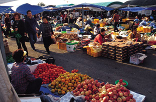
제주민속오일 시장
제주 최대의 오일장. 지역민들뿐만 아니라
관광객들도 한번쯤 둘러보고 가는 명소이다.
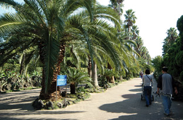
한림공원 길 사진
용암동굴인 협재굴, 쌍용굴, 제주도
전통초가들을 구경할 수 있는 곳이다.
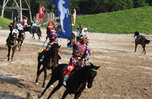
더마파크
더마파크는 정식명칭은 ‘The 馬’파크로,
세계 최대 규모의 상설기마공연장이다.
국내 최초로 마상공연 ’칭기즈칸의 검은 깃발’ 4부작을 진행중이다.
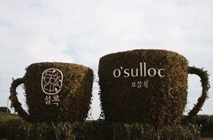
오설록
오설록에서는 5천년의 역사를 자랑하는
기호식품인 녹차에 대한 정보와 차문화의
역사를 살펴볼 수 있는 박물관.
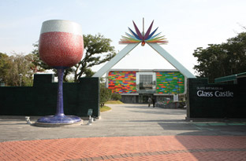
유리의 성
온통 유리로 꾸며놓은 테마파크, 반짝반짝
유리가 말랑해져 마치 풍선껌처럼 늘어나는
모습이 신기하고 재미있다.
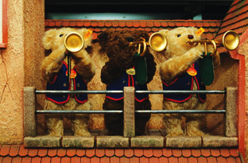
제주테디베어박물관
100년이 넘는 테디베어의 역사와 더불어,
세계 유명 작가들의 예술작품을 테마로 한
테디베어등 다양한 볼거리를 선사한다.
동부권
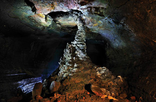
김녕만장굴
화산 용암의 침하운동으로 생성된 세계 최고
규모의 용암동굴. 천연기념물 제 98호로
지정되었다.
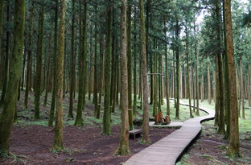
절물자연 휴양림
삼림욕은 심폐기능의 강화, 기관지 천식 및
폐결핵을 예방하는데 도움. 특히 절물에서는
신경통과 위장병에 효과가 있는 약수도 맛 볼 수
있으니 일석이조이다.
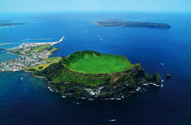
성산일출봉
바다 한가운데서 화산이 수중 폭발해 생겨난
화구. 보존가치가 높아 지난 2000년 천연기념물
420호로 지정되었다.
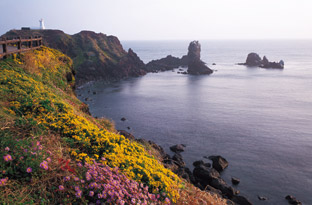
섭지코지
드라마 ‘올인’의 촬영지로 유명한 곳. 봄에는
노란 유채꽃 가을에는 억새꽃이 로맨틱한
분위기를 자아낸다.
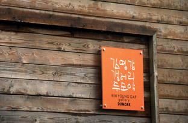
김영갑 갤러리
15년 동안 제주의 오름과 바다만을 찍으며
살던 김영갑은 갤러리를 만들던 중 루게릭 병으로
고인이 됐다. 그의 사진에는 제주의 숨겨진
속살까지 담겨있다.
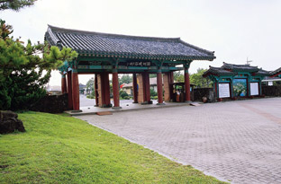
제주 민속촌 박물관
제주에 하나뿐인 민속촌 테마공원.
생업생활용구와 전통놀이기구 등 약 3천여 점의
제주 고유자료를 받아볼 수 있다.